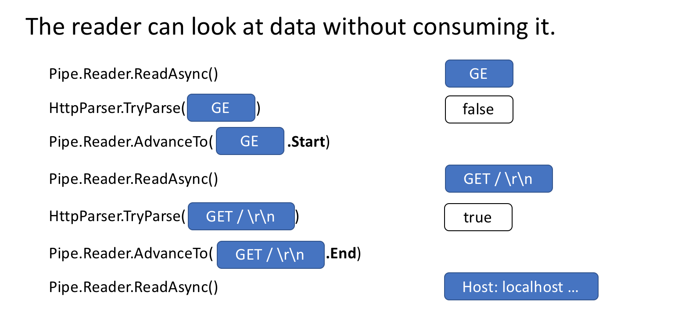
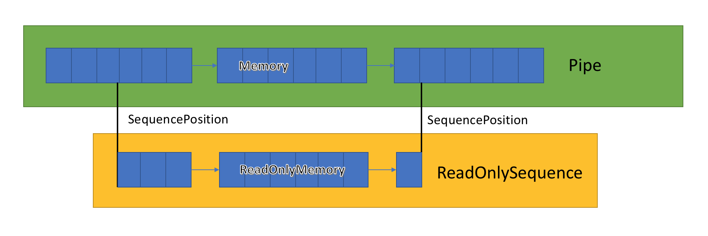
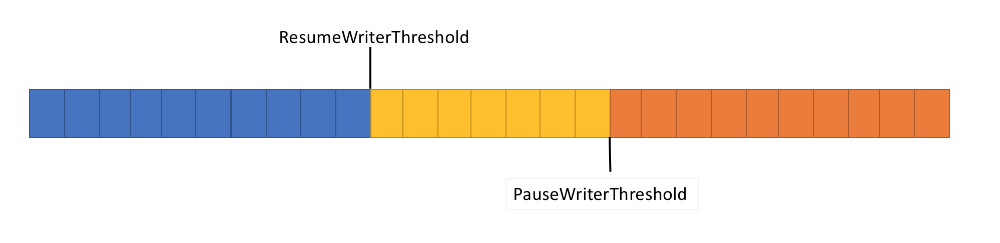

System.IO.Pipelines是一个新的库，旨在简化在.NET中执行高性能IO的过程。它是一个依赖.NET Standard的库，适用于所有.NET实现。
Pipelines诞生于.NET Core团队，为使Kestrel成为业界最快的Web服务器之一。最初从作为Kestrel内部的实现细节发展成为可重用的API，它在.Net Core 2.1中作为可用于所有.NET开发人员的最高级BCL API（System.IO.Pipelines）提供。
为了正确解析Stream或Socket中的数据，代码有固定的样板，并且有许多极端情况，为了处理他们，不得不编写难以维护的复杂代码。
实现高性能和正确性，同时也难以处理这种复杂性。Pipelines旨在解决这种复杂性。
让我们从一个简单的问题开始吧。我们想编写一个TCP服务器，它接收来自客户端的用行分隔的消息（由\n分隔）。（译者注：即一行为一条消息）
在Pipelines之前用.NET编写的典型代码如下所示：
async Task ProcessLinesAsync(NetworkStream stream)
{
var buffer = new byte[1024];
await stream.ReadAsync(buffer, 0, buffer.Length);
// 在buffer中处理一行消息
ProcessLine(buffer);
}此代码可能在本地测试时正确工作，但它有几个潜在错误：
ReadAsync调用可能没有收到整个消息（行尾）。stream.ReadAsync()返回值中实际填充到buffer中的数据量。（译者注：即不一定将buffer填充满）ReadAsync调用不能处理多条消息。这些是读取流数据时常见的一些缺陷。为了解决这个问题，我们需要做一些改变：
async Task ProcessLinesAsync(NetworkStream stream)
{
var buffer = new byte[1024];
var bytesBuffered = 0;
var bytesConsumed = 0;
while (true)
{
var bytesRead = await stream.ReadAsync(buffer, bytesBuffered, buffer.Length - bytesBuffered);
if (bytesRead == 0)
{
// EOF 已经到末尾
break;
}
// 跟踪已缓冲的字节数
bytesBuffered += bytesRead;
var linePosition = -1;
do
{
// 在缓冲数据中查找找一个行末尾
linePosition = Array.IndexOf(buffer, (byte)‘\n‘, bytesConsumed, bytesBuffered - bytesConsumed);
if (linePosition >= 0)
{
// 根据偏移量计算一行的长度
var lineLength = linePosition - bytesConsumed;
// 处理这一行
ProcessLine(buffer, bytesConsumed, lineLength);
// 移动bytesConsumed为了跳过我们已经处理掉的行 (包括\n)
bytesConsumed += lineLength + 1;
}
}
while (linePosition >= 0);
}
}这一次，这可能适用于本地开发，但一行可能大于1KiB（1024字节）。我们需要调整输入缓冲区的大小，直到找到新行。
因此，我们可以在堆上分配缓冲区去处理更长的一行。我们从客户端解析较长的一行时，可以通过使用ArrayPool<byte>避免重复分配缓冲区来改进这一点。
async Task ProcessLinesAsync(NetworkStream stream)
{
byte[] buffer = ArrayPool<byte>.Shared.Rent(1024);
var bytesBuffered = 0;
var bytesConsumed = 0;
while (true)
{
// 在buffer中计算中剩余的字节数
var bytesRemaining = buffer.Length - bytesBuffered;
if (bytesRemaining == 0)
{
// 将buffer size翻倍 并且将之前缓冲的数据复制到新的缓冲区
var newBuffer = ArrayPool<byte>.Shared.Rent(buffer.Length * 2);
Buffer.BlockCopy(buffer, 0, newBuffer, 0, buffer.Length);
// 将旧的buffer丢回池中
ArrayPool<byte>.Shared.Return(buffer);
buffer = newBuffer;
bytesRemaining = buffer.Length - bytesBuffered;
}
var bytesRead = await stream.ReadAsync(buffer, bytesBuffered, bytesRemaining);
if (bytesRead == 0)
{
// EOF 末尾
break;
}
// 跟踪已缓冲的字节数
bytesBuffered += bytesRead;
do
{
// 在缓冲数据中查找找一个行末尾
linePosition = Array.IndexOf(buffer, (byte)‘\n‘, bytesConsumed, bytesBuffered - bytesConsumed);
if (linePosition >= 0)
{
// 根据偏移量计算一行的长度
var lineLength = linePosition - bytesConsumed;
// 处理这一行
ProcessLine(buffer, bytesConsumed, lineLength);
// 移动bytesConsumed为了跳过我们已经处理掉的行 (包括\n)
bytesConsumed += lineLength + 1;
}
}
while (linePosition >= 0);
}
}这段代码有效，但现在我们正在重新调整缓冲区大小，从而产生更多缓冲区副本。它将使用更多内存，因为根据代码在处理一行行后不会缩缓冲区的大小。为避免这种情况，我们可以存储缓冲区序列，而不是每次超过1KiB大小时调整大小。
此外，我们不会增长1KiB的 缓冲区，直到它完全为空。这意味着我们最终传递给ReadAsync越来越小的缓冲区，这将导致对操作系统的更多调用。
为了缓解这种情况，我们将在现有缓冲区中剩余少于512个字节时分配一个新缓冲区：
public class BufferSegment
{
public byte[] Buffer { get; set; }
public int Count { get; set; }
public int Remaining => Buffer.Length - Count;
}
async Task ProcessLinesAsync(NetworkStream stream)
{
const int minimumBufferSize = 512;
var segments = new List<BufferSegment>();
var bytesConsumed = 0;
var bytesConsumedBufferIndex = 0;
var segment = new BufferSegment { Buffer = ArrayPool<byte>.Shared.Rent(1024) };
segments.Add(segment);
while (true)
{
// Calculate the amount of bytes remaining in the buffer
if (segment.Remaining < minimumBufferSize)
{
// Allocate a new segment
segment = new BufferSegment { Buffer = ArrayPool<byte>.Shared.Rent(1024) };
segments.Add(segment);
}
var bytesRead = await stream.ReadAsync(segment.Buffer, segment.Count, segment.Remaining);
if (bytesRead == 0)
{
break;
}
// Keep track of the amount of buffered bytes
segment.Count += bytesRead;
while (true)
{
// Look for a EOL in the list of segments
var (segmentIndex, segmentOffset) = IndexOf(segments, (byte)‘\n‘, bytesConsumedBufferIndex, bytesConsumed);
if (segmentIndex >= 0)
{
// Process the line
ProcessLine(segments, segmentIndex, segmentOffset);
bytesConsumedBufferIndex = segmentOffset;
bytesConsumed = segmentOffset + 1;
}
else
{
break;
}
}
// Drop fully consumed segments from the list so we don‘t look at them again
for (var i = bytesConsumedBufferIndex; i >= 0; --i)
{
var consumedSegment = segments[i];
// Return all segments unless this is the current segment
if (consumedSegment != segment)
{
ArrayPool<byte>.Shared.Return(consumedSegment.Buffer);
segments.RemoveAt(i);
}
}
}
}
(int segmentIndex, int segmentOffest) IndexOf(List<BufferSegment> segments, byte value, int startBufferIndex, int startSegmentOffset)
{
var first = true;
for (var i = startBufferIndex; i < segments.Count; ++i)
{
var segment = segments[i];
// Start from the correct offset
var offset = first ? startSegmentOffset : 0;
var index = Array.IndexOf(segment.Buffer, value, offset, segment.Count - offset);
if (index >= 0)
{
// Return the buffer index and the index within that segment where EOL was found
return (i, index);
}
first = false;
}
return (-1, -1);
}此代码只是得到很多更加复杂。当我们正在寻找分隔符时，我们同时跟踪已填充的缓冲区序列。为此，我们此处使用List<BufferSegment>查找新行分隔符时表示缓冲数据。其结果是，ProcessLine和IndexOf现在接受List<BufferSegment>作为参数，而不是一个byte[]，offset和count。我们的解析逻辑现在需要处理一个或多个缓冲区序列。
我们的服务器现在处理部分消息，它使用池化内存来减少总体内存消耗，但我们还需要进行更多更改：
byte[]和ArrayPool<byte>的只是普通的托管数组。这意味着无论何时我们执行ReadAsync或WriteAsync，这些缓冲区都会在异步操作的生命周期内被固定（以便与操作系统上的本机IO API互操作）。这对GC有性能影响，因为无法移动固定内存，这可能导致堆碎片。根据异步操作挂起的时间长短，池的实现可能需要更改。复杂性已经到了极端（我们甚至没有涵盖所有案例）。高性能网络应用通常意味着编写非常复杂的代码，以便从系统中获得更高的性能。
System.IO.Pipelines的目标是使这种类型的代码更容易编写。
让我们来看看这个例子的样子System.IO.Pipelines：
async Task ProcessLinesAsync(Socket socket)
{
var pipe = new Pipe();
Task writing = FillPipeAsync(socket, pipe.Writer);
Task reading = ReadPipeAsync(pipe.Reader);
return Task.WhenAll(reading, writing);
}
async Task FillPipeAsync(Socket socket, PipeWriter writer)
{
const int minimumBufferSize = 512;
while (true)
{
// 从PipeWriter至少分配512字节
Memory<byte> memory = writer.GetMemory(minimumBufferSize);
try
{
int bytesRead = await socket.ReceiveAsync(memory, SocketFlags.None);
if (bytesRead == 0)
{
break;
}
// 告诉PipeWriter从套接字读取了多少
writer.Advance(bytesRead);
}
catch (Exception ex)
{
LogError(ex);
break;
}
// 标记数据可用，让PipeReader读取
FlushResult result = await writer.FlushAsync();
if (result.IsCompleted)
{
break;
}
}
// 告诉PipeReader没有更多的数据
writer.Complete();
}
async Task ReadPipeAsync(PipeReader reader)
{
while (true)
{
ReadResult result = await reader.ReadAsync();
ReadOnlySequence<byte> buffer = result.Buffer;
SequencePosition? position = null;
do
{
// 在缓冲数据中查找找一个行末尾
position = buffer.PositionOf((byte)‘\n‘);
if (position != null)
{
// 处理这一行
ProcessLine(buffer.Slice(0, position.Value));
// 跳过 这一行+\n (basically position 主要位置？)
buffer = buffer.Slice(buffer.GetPosition(1, position.Value));
}
}
while (position != null);
// 告诉PipeReader我们以及处理多少缓冲
reader.AdvanceTo(buffer.Start, buffer.End);
// 如果没有更多的数据，停止都去
if (result.IsCompleted)
{
break;
}
}
// 将PipeReader标记为完成
reader.Complete();
}我们的行读取器的pipelines版本有2个循环：
FillPipeAsync从Socket读取并写入PipeWriter。ReadPipeAsync从PipeReader中读取并解析传入的行。与原始示例不同，在任何地方都没有分配显式缓冲区。这是管道的核心功能之一。所有缓冲区管理都委托给PipeReader/PipeWriter实现。
这使得使用代码更容易专注于业务逻辑而不是复杂的缓冲区管理。
在第一个循环中，我们首先调用PipeWriter.GetMemory(int)从底层编写器获取一些内存; 然后我们调用PipeWriter.Advance(int)告诉PipeWriter我们实际写入缓冲区的数据量。然后我们调用PipeWriter.FlushAsync()来提供数据给PipeReader。
在第二个循环中，我们正在使用PipeWriter最终来自的缓冲区Socket。当调用PipeReader.ReadAsync()返回时，我们得到一个ReadResult包含2条重要信息，包括以ReadOnlySequence<byte>形式读取的数据和bool IsCompleted，让reader知道writer是否写完（EOF）。在找到行尾（EOL）分隔符并解析该行之后，我们将缓冲区切片以跳过我们已经处理过的内容，然后我们调用PipeReader.AdvanceTo告诉PipeReader我们消耗了多少数据。
在每个循环结束时，我们完成了reader和writer。这允许底层Pipe释放它分配的所有内存。
除了处理内存管理之外，其他核心管道功能还包括能够在Pipe不实际消耗数据的情况下查看数据。
PipeReader有两个核心API ReadAsync和AdvanceTo。ReadAsync获取Pipe数据，AdvanceTo告诉PipeReader不再需要这些缓冲区，以便可以丢弃它们（例如返回到底层缓冲池）。
这是一个http解析器的示例，它在接收Pipe到有效起始行之前读取部分数据缓冲区数据。

该Pipe实现存储了在PipeWriter和PipeReader之间传递的缓冲区的链接列表。PipeReader.ReadAsync暴露一个ReadOnlySequence<T>新的BCL类型，它表示一个或多个ReadOnlyMemory<T>段的视图，类似于Span<T>和Memory<T>提供数组和字符串的视图。

该Pipe内部维护指向reader和writer可以分配或更新它们的数据集合，。SequencePosition表示缓冲区链表中的单个点，可用于有效地对ReadOnlySequence<T>进行切片。
这段实在翻译困难，给出原文
The Pipe internally maintains pointers to where the reader and writer are in the overall set of allocated data and updates them as data is written or read. The SequencePosition represents a single point in the linked list of buffers and can be used to efficiently slice the ReadOnlySequence
由于ReadOnlySequence<T>可以支持一个或多个段，因此高性能处理逻辑通常基于单个或多个段来分割快速和慢速路径（fast and slow paths?）。
例如，这是一个将ASCII ReadOnlySequence<byte>转换为string以下内容的例程：
string GetAsciiString(ReadOnlySequence<byte> buffer)
{
if (buffer.IsSingleSegment)
{
return Encoding.ASCII.GetString(buffer.First.Span);
}
return string.Create((int)buffer.Length, buffer, (span, sequence) =>
{
foreach (var segment in sequence)
{
Encoding.ASCII.GetChars(segment.Span, span);
span = span.Slice(segment.Length);
}
});
}在一个完美的世界中，读取和解析工作是一个团队：读取线程消耗来自网络的数据并将其放入缓冲区，而解析线程负责构建适当的数据结构。通常，解析将比仅从网络复制数据块花费更多时间。结果，读取线程可以轻易地压倒解析线程。结果是读取线程必须减慢或分配更多内存来存储解析线程的数据。为获得最佳性能，在频繁暂停和分配更多内存之间存在平衡。
为了解决这个问题，管道有两个设置来控制数据的流量，PauseWriterThreshold和ResumeWriterThreshold。PauseWriterThreshold决定有多少数据应该在调用PipeWriter.FlushAsync之前进行缓冲停顿。ResumeWriterThreshold控制reader消耗多少后写入可以恢复。

当Pipe的数据量超过PauseWriterThreshold，PipeWriter.FlushAsync会异步阻塞。数据量变得低于ResumeWriterThreshold，它会解锁时。两个值用于防止在极限附近发生反复阻塞和解锁。
通常在使用async / await时，会在线程池线程或当前线程上调用continuation SynchronizationContext。
在执行IO时，对执行IO的位置进行细粒度控制非常重要，这样可以更有效地利用CPU缓存，这对于Web服务器等高性能应用程序至关重要。Pipelines公开了一个PipeScheduler确定异步回调运行位置的方法。这使得调用者可以精确控制用于IO的线程。
实践中的一个示例是在Kestrel Libuv传输中，其中IO回调在专用事件循环线程上运行。
作为制作System.IO.Pipelines的一部分，我们还添加了许多新的原始BCL类型：
MemoryPool<T>，IMemoryOwner<T>，MemoryManager<T> - .NET Core 1.0添加了ArrayPool<T>，在.NET Core 2.1中，我们现在有一个更通用的抽象，适用于任何工作的池Memory<T>。这提供了一个可扩展点，允许您插入更高级的分配策略以及控制缓冲区的管理方式（例如，提供预先固定的缓冲区而不是纯托管的阵列）。IBufferWriter<T> - 表示用于写入同步缓冲数据的接收器。（PipeWriter实现这个）ValueTask<T>自.NET Core 1.1以来就已存在，但在.NET Core 2.1中获得了一些超级权限，允许无分配的等待异步操作。有关详细信息，请参阅https://github.com/dotnet/corefx/issues/27445。API存在于System.IO.Pipelines nuget包中。
主要包含一个Pipe对象，它有一个Writer属性和Reader属性。
var pipe = new Pipe();
var writer = pipe.Writer;
var reader = pipe.Reader;
Writer对象用于从数据源读取数据，将数据写入管道中；它对应业务中的"读"操作。
var content = Encoding.Default.GetBytes("hello world");
var data = new Memory<byte>(content);
var result = await writer.WriteAsync(data);
另外，它也有一种使用Pipe申请Memory的方式
var buffer = writer.GetMemory(512);
content.CopyTo(buffer);
writer.Advance(content.Length);
var result = await writer.FlushAsync();
Reader对象用于从管道中获取数据源，它对应业务中的"用"操作。
首先获取管道的缓冲区：
var result = await reader.ReadAsync();
var buffer = result.Buffer;
这个Buffer是一个ReadOnlySequence<byte>对象，它是一个相当好的动态内存对象，并且相当高效。它本身由多段Memory<byte>组成，查看Memory段的方法有：
IsSingleSegment： 判断是否只有一段Memory<byte>
First： 获取第一段Memory<byte>
GetEnumerator: 获取分段的Memory<byte>
它从逻辑上也可以看成一段连续的Memory<byte>，也有类似的方法：
Length： 整个数据缓冲区长度
Slice： 分割缓冲区
CopyTo: 将内容复制到Span中
ToArray： 将内容复制到byte[]中
另外，它还有一个类似游标的位置对象SequencePosition，可以从其Position相关函数中使用，这里就不多介绍了。
这个缓冲区解决了"数据读不够"的问题，一次读取的不够下次可以接着读，不用缓冲区的动态分配，高效的内存管理方式带来了良好的性能，好用的接口是我们能更关注业务。
获取到缓冲区后，就是使用缓冲区的数据
var data = buffer.ToArray();
使用完后，告诉PIPE当前使用了多少数据，下次接着从结束位置后读起
reader.AdvanceTo(buffer.GetPosition(4));
这是一个相当实用的设计，它解决了"读了就得用"的问题，不仅可以将不用的数据下次再使用，还可以实现Peek的操作，只读但不改变游标。
除了"读"和"用"操作外，它们之间还需要一些交互，例如：
读过程中数据源不可用，需要停止使用
使用过程中业务结束，需要中止数据源。
Reader和Writer都有一个Complete函数，用于通知结束：
reader.Complete();
writer.Complete();
在Writer写入和Reader读取时，会获得一个结果
FlushResult result = await writer.FlushAsync();
ReadResult result = await reader.ReadAsync();
它们都有一个IsComplete属性，可以根据它是否为true判断是否已经结束了读和写的操作。
在写入和读取的时候，也可以传入一个CancellationToken，用于取消相应的操作。
writer.FlushAsync(CancellationToken.None);
reader.ReadAsync(CancellationToken.None);
如果取消成功，对应的Result的IsCanceled则为true
转载请标明本文来源：https://www.cnblogs.com/yswenli/p/11810317.html
更多内容欢迎Star、Fork我的的github：https://github.com/yswenli/
如果发现本文有什么问题和任何建议，也随时欢迎交流~